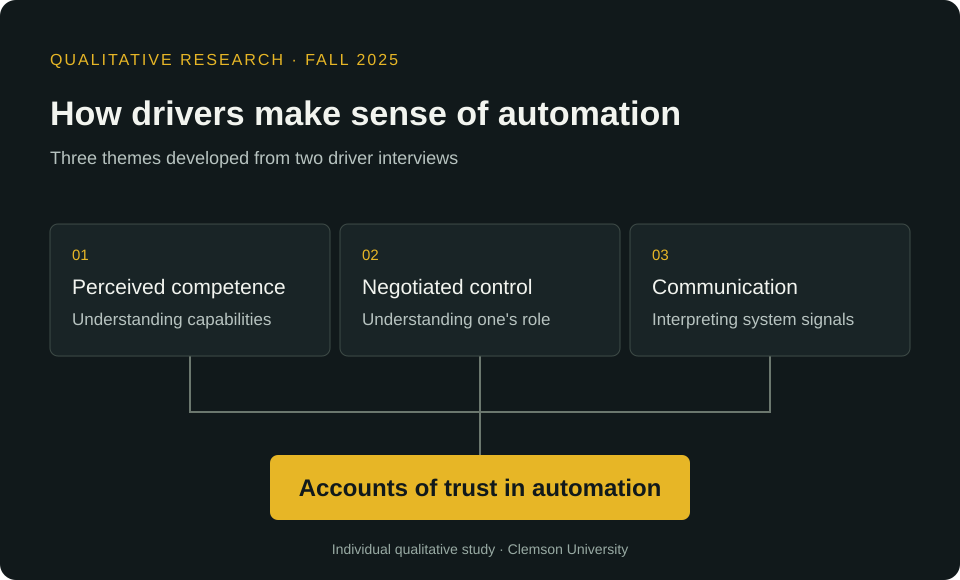

How do drivers make sense of vehicle communication, negotiate control and develop trust in consumer driving-assistance features? The initial protocol focused on communication modes and transitions of control. The final analysis connected those questions to perceived competence, control and communication.
I recruited two adult Tesla drivers through convenience sampling and conducted semi-structured Zoom interviews lasting approximately 30 minutes. I recorded, transcribed and checked the interviews, then developed codes and themes through an inductive reflexive thematic analysis.
This was my individual course project. I designed the study, developed the guide, interviewed participants, analyzed their accounts and wrote the final paper.
Participants described confidence in assistance in relation to their understanding of its capabilities. I interpreted trust as conditional on perceived performance and an understandable account of what features could and could not do. This suggests evaluating guided onboarding and users’ understanding of system limits.
Participants valued assistance while wanting an understandable way to resume manual control. Their preferences depended on the situation. I interpreted control as negotiated between driver and automation. Clear operating-mode information and control-transition concepts are directions for further evaluation.
Participants described visual information as reassuring for routine awareness and connected sound or tactile cues to urgency and attention. I interpreted communication as supporting understanding, attention and comfort. Comparing communication concepts across scenarios and accessibility needs would extend this work.
My background in human-centered computing and accessibility shaped my attention to transparency and control. I reflected on my positive expectations about automation and how these could influence the research. Reflexivity acknowledges this interpretive lens rather than eliminating subjectivity.
These themes describe accounts from two experienced users. The study did not establish prevalence, thematic saturation, measured workload, safe handover timing or vehicle safety performance. Broader recruitment and scenario-based observation would help evaluate the proposed design directions.